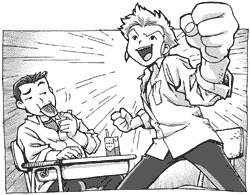
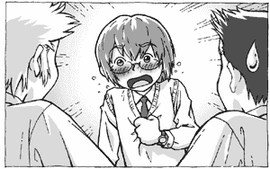
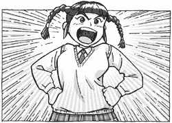
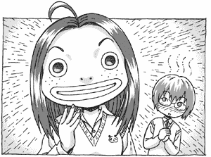

|
「ナニ？ セッシュウのようすがヘン？」 知佳志が聞き返すと、大介はうんうんとうなずいた。 「セッシュウなら、いつもヘンだべや」 「それがさ、いつもよりヘンなんだよ」 昼休みの教室。知佳志と大介は向かい合わせに座って、 購買で買ったパンをかじっていた。 「最近、話しかけても上の空で、ボーッと遠くを見てたりするんだ。 今日だって昼メシに誘ったのに、食欲がないとか言って行っちゃったし」 「アイツのコトだ、どーせサカナのコトでも考えてんだべ？」 「そうかなぁ？ サカナのことを考えているときは、もっとこう…… うっとりしたような、イッちゃったようなカオしてるじゃん」 「そう言われりゃ、そうだよなー。アイツ、なんかあったのか？」 「さぁ……」 ２人はしばらく無言で考えていたが、突然知佳志がつぶやいた。 「……オンナだな」 「はぁ？」 「夏休み中、結局カノジョできなかったっしょ？ 季節は夏から秋へ。 秋と言えば……恋！ 恋しかないっしょ！」 「どういうリクツだよ……」 大介がゲンナリとしたカオでつっこんだが、知佳志は気にせず、 「セッシュウはスキなオンナに告白できなくて悩んでるんだべや」 「それ、なんの根拠があって言ってるんだよ？」 「コンキョなんてねえっ！ オレのカンだっ！」 大介は知佳志に白い視線を送りながらグチった。 「おまえのカンほどアテにならないモノはないよ……。 そもそも、春の林間学校のときだって、そのおかげで おれと中山はヒドイ目にあったんだから……」 「ダイスケ、オトコなら過去のコトは忘れろや！ とにかく、オレたちはセッシュウの『親友』として、 協力してやるしかねぇべ！」  コブシをグッとにぎりしめ、知佳志は１人で盛り上がっている。 「したらさっそく、セッシュウに事情を吐かせ…… イヤ、相談を聞いてやるべ！ 行くぞダイスケ！」 知佳志はパンのカラ袋をゴミ箱に投げ入れてから、教室を飛び出した。 「あっおい、待てよ吉川！」 大介もパックの牛乳を持ったまま、そのあとを追って行った。 ◆ ◆ ◆ 「はぁ……」 中庭にある池の前で、雪舟はため息をついた。 池を泳ぐ赤い金魚を、目で追う。 「はぁ……」 もうひとつため息をついたところで、背後から足音が聞こえてきた。 「あっいた、中山っ！」 自分を呼ぶ声に振り返ると、走ってきたのか、 ゼイゼイと肩で息をしている知佳志と大介が立っていた。 「ふっふっふ……やっと見つけたぜセッシュウ～」 近づいてくる知佳志と大介を見て雪舟はあとずさったが、背後は池。 逃げ場がなかった。 知佳志は雪舟の肩をガシィ！と抱き、（正しくはヘッドロック） ニヤリと笑いながらたずねた。 「オマエ、最近悩みがあるんだってぇ～？ オレらに相談してみろやぁ～」 「よ、吉川くん……。 それ、『相談にのる』っていうカンジじゃないよ……」 「んだと～！？ オレの親切を！」 「や、やめてよ～！」 「こらこら！」 大介は、雪舟の首をユサユサと揺らす知佳志を止めた。 「中山、思いつめると体に毒だぞ。 おれたちでよければ相談にのるからさ。なっ」 「なんだよダイスケ、ひとりでイイヤツぶってんじゃねーぞ！」 「佐藤くんて、いいヒトすぎて逆にウサンくさいよね……」 「なに～！？ おまえらそれはないだろ！」 結局モメてしまう３人なのであった。 ◆ ◆ ◆ 昼休みはとっくに終わり５時限目が始まっていたが、 知佳志が『授業より友達の悩みを聞いてあげるほうが大事』 と主張し、３人は教室には戻らず、人目につかない裏庭に移動した。 知佳志と大介に両側から腕をつかまれ、雪舟は『連行された』と 言ったほうが正しい。 「だからぁ、オマエ悩みがあるんだべ？」 「なっ……ななななな、ないよ、悩みなんて！」 雪舟はガクガクと首を横に振った。その態度が思いっきりアヤしい。 「セッシュウ、早く言っちまえよ？」 「そうそう、言えばラクになるんだぞ」 「……と、取り調べじゃないんだから……」 しばらく尋問したが、なかなか口を割らない雪舟にイラだった知佳志は ビシッと指を差し、 「オマエが言わなくてもオレにはわかってるんだぜ！ いまスキなオンナがいて、告白できずに悩んでるんだベや！！」 「……なっ……」 雪舟は絶句した。 「なんで知ってるの！？」 『当たってんのか！？』  ２人の反応に、雪舟は『しまった』というカオになった。 「そーかそーか、オレのカンはやっぱり正しかった！」 「吉川のカンが当たるなんて……」 大介のつぶやきは無視して、知佳志は雪舟にニジリ寄った。 「……で？ ダレなんだよ、スキなオンナって……」 「いいいい……言えないよ！」 「早く言え！ ページ数が長くなっちまうだろ！？」 「な……なんなのその理由……いたたたたっ！！」 知佳志にコブラツイストをキメられて、雪舟もさすがに観念した。 「い、言うよ！ 言うから！」 「ダレだよ！？」 「い……１組の……ふ、ふ、ふふふ……」 「フジタ？」 「フクダ？」 雪舟は、小さ～い声で言った。 「ふ、ふ、ふ……ふかださん」 「フカダ？ 吉川、１組の深田って知ってる？」 大介に訊かれ、知佳志は首を横に振った。 「深田って、どんなコ？」 いつも以上に真っ赤になって、雪舟はモジモジしながら言った。 「……す……すっ、すごっ、すごく……か……かわいい……」 「１組に、そんなにイイオンナいたっけ？」 校内のかわいいコをほとんどチェックしている知佳志は 首をかしげたが、思い出せなかった。雪舟の肩をポンとたたき、 「んじゃま、とにかく、その深田んトコ行って、告白してこいよ！」 「かっ、軽く言わないでよ！」 「そうだよ、まず出会ってから、デートしたりプレゼントして ラブラブポイントを高めていくのがスジってもんだろ！」 「佐藤くん、それちがうと思う……」 知佳志は手をパタパタ振った。 「そんなまだるっこしいコトやってらんねぇよ！ ソク告白だ告白！ 当たってくだけろ、なっセッシュウ！」 「た……他人事だと思って……」 ……キーンコーンカーンコーン…… ちょうどそこで終業のベルが鳴った。 「おっ、なんまらいいタイミングたべや」 「じゃあさっそく、１組に行こうぜ」 ふたたび知佳志と大介が両側から、雪舟の腕をがしっとつかんだ。 「いっ、イヤだぁぁぁ～～！！」 雪舟の叫び声が、裏庭にコダマした。 と、その時……。 「コラ！ ソコでなにしてるネ！？」 いきなりひびいた聞き覚えのある声に、３人はびくぅっ！と飛びあがった。 振り向くと、太いマユをつりあげたメイファが仁王立ちしている。  「うわ、やべえメイファだ！」 「３人とも、授業サボって遊んでるとはナニゴトネ！？ 事情によっては、タダじゃおかないネ！」 ズンズン３人に近づくメイファ。ケリの１発でも飛んできそうな勢いだ。 知佳志がアセって話題をそらした。 「メイファ、１組の深田って知ってっか？」 「フカダ？ ……知らないネ」 「セッシュウが、深田のコトがスキなんだけど、 告白できねーから悩んでるんだ」 「アイヤー！！ それならいますぐ告白しに行くネ！ 善は急げネ！ サァ、セッシュウ行くネ！」 メイファは雪舟の腕をつかんで、そのままズルズルとひっぱっていった。 もちろん知佳志と大介もついていく。 雪舟はナミダ目でつぶやいた。 「ど……どうしていつもこんな目に……」 ◆ ◆ ◆ メイファは１組の教室のドアを開けるなり、大声で聞いた。 「深田サンに用があるネ！ 深田サンはいるカ？」 「ああああ……リィさん……展開が早すぎるよ……」 メイファの後ろで、雪舟がナミダぐんでいる。 知佳志と大介は、廊下の窓から１組の教室をのぞきこむ。 「おい、深田ってどいつだよ？」 「あっ、アレ！ いま呼ばれて立ち上がった女子！」 大介が指さした方を見ると、女子生徒がメイファのほうへ向かって歩いていた。 「まちがいない、アイツが深田だ！」 目をこらして凝視する２人。 『………… ………… …………』 沈黙が流れた。 知佳志がかすれた声で、雪舟にたずねる。 「おい……セッシュウ……オマエのスキなコって……アイツ？」 雪舟は赤いカオでコクリとうなずき、 「か……かわいいよね深田さん……。つぶらで離れぎみの目、 大きくてボリューム感のあるクチビル……独特なヘアスタイル…… ボクの大好きなアンコウにそっくりだ……」  「セッシュウ！ 深田あん子チャンを呼んだネ！ 早くコッチ来るネ！」 メイファにムリヤリ呼ばれたが、雪舟は真っ赤になってなにも言えない。 それを見ていたメイファは、 「アアもう、ジレったくて見ていられないネ！ メイファがかわりに言ってあげるネ！」 「ちょっ……ちょっとリィさん！？」 雪舟はあわてたが遅かった。メイファがズバリと言い放つ。 「このセッシュウは、アナタのコトがダイスキネ！ ゼヒ、ケッコンしてほしいと思っているネ！ セッシュウはちょっと消極的だガ、ワルイヒトではナイネ！ メイファからもお願いするネ！」 告白された（？）あん子は、目の前に突っ立っている雪舟を見上げて、 「えーっ？ 悪いケドあん子のタイプじゃないってゆーかぁ、 それにあん子カレシいるしぃ～、ゴメンネってカンジ？」 があぁ～～～ん…… 雪舟の恋は終わった。 メイファは真っ白になっている雪舟の背中をバンバンたたきながら、 「セッシュウ、落ち込んではダメネ！ 元気出すネ！ 放課後、ハオハオに来るとイイネ。今日はメイファのオゴリネ！」 と、彼女なりにはげましている。 「やっぱり……ヘンだよなアイツ……」 「うん……まちがいなくヘンだよ……」 メイファにひっぱられて行く雪舟の姿を見送りながら、 知佳志と大介はボーゼンと立ち尽くしていた。 おしまい
|
| ノベルに戻る |